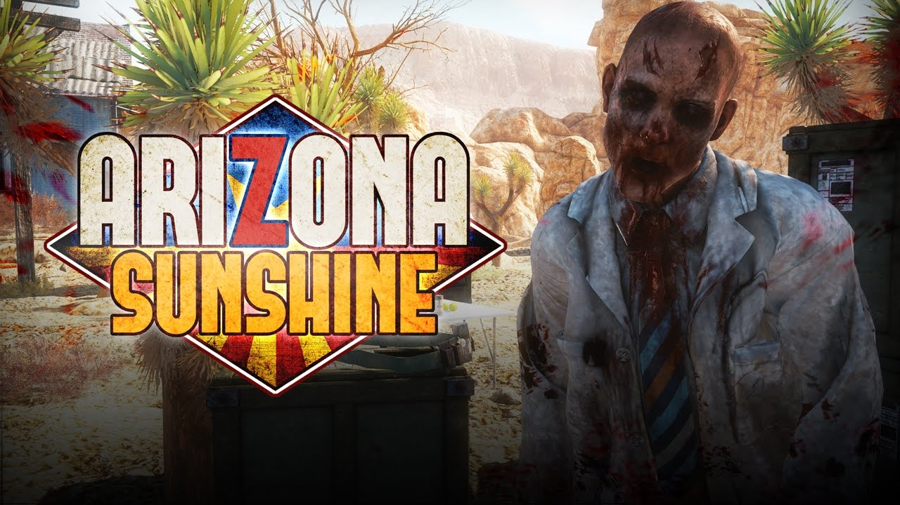
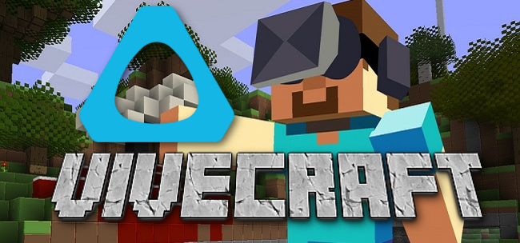

These are a few games I am hoping get released on the quest, as its library is quite small compared to PCVR (Steam).
Just recently announced for Quest, Arizona Sunshine is a zombie survival game and one of the first of its kind in VR. The game would have been amazing as a launch title, but sadly didn't happen. However, the game was announced for a December release date, so can't wait to get my hands on it!
A very popular horror game turned even scarier, FNAF VR is a VR version of the famous "Five Nights" series with many different scenarios to give you a good scare. I've been waiting for this game to come out for quite some time, as it was announced for the Quest with no actual release date.
I mean, who doesn't want Minecraft VR to come to the Quest? I'm pretty sure everyone knows what Minecraft is so I won't describe it. It is one of the most highly requested VR games for quest, since it is already on PCVR. I would love to try it out and spend countless hours in it.
